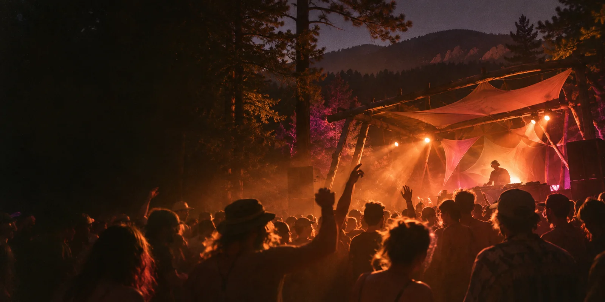
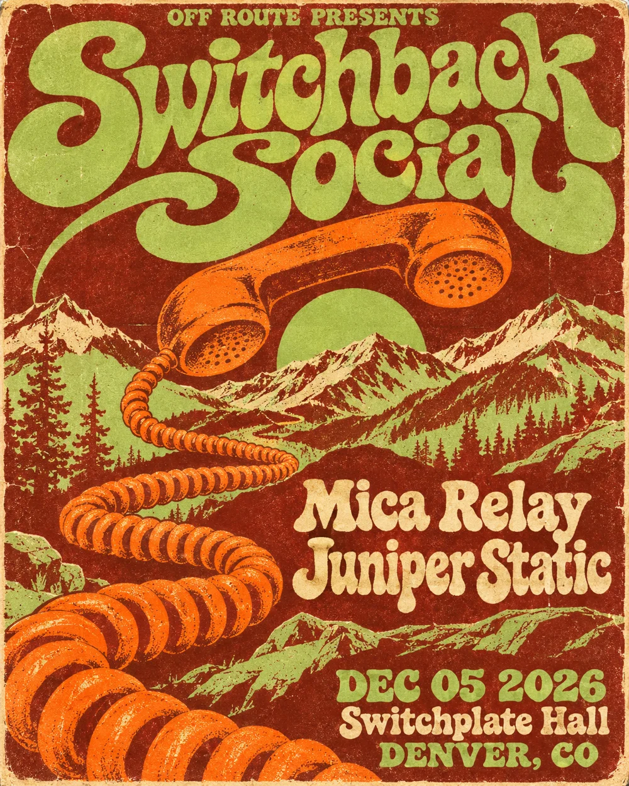
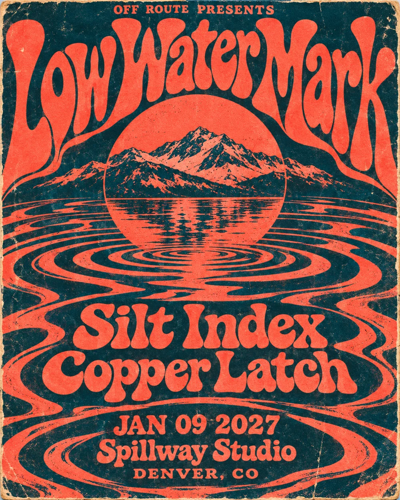

Switchback Social
Switchplate Hall · Denver, CO


Colorado / Independent electronic music
Underground shows and artist management.
For the ones who follow the sound.

Denver / Example season
Switchplate Hall · Denver, CO

The Ribbon Room · Denver, CO

Spillway Studio · Denver, CO
Artist management / Sample roster
Mica Relay listens for the little hitch in a drum loop.

Velour Antenna builds a chorus one breath at a time.

A pocket recorder is the first instrument in a Silt Index set.
Show announcement
Two record bags, one floor-level booth and a deliberate change of pace.
Read the story